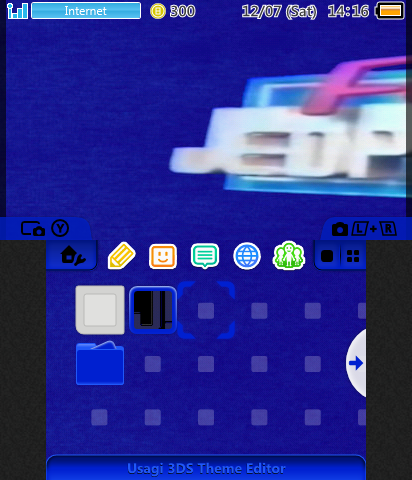
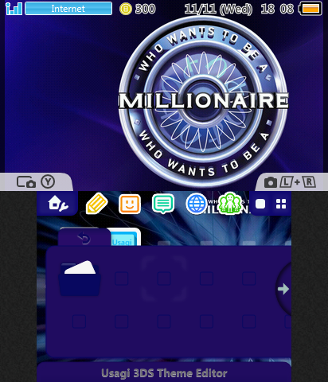

Here I preserve my own custom themes I can release for you guys. This is for the 3DS only! NOTE: Files must be unextracted and placed in your Themes folder in your SD card.
There are currently 2 themes up for download.
Jeopardy! 1996 Theme.
Classic theme with the First Final Jeopardy! art creation looks for the new 1996-2002 Sushi Bar Set.
Music: Think Music from 1984-1997.
__________________________________________________________________________________________
WWTBAM Theme
Fan-made theme! Includes the intro music then the Q Music.
Direct Download
More Themes will be added from time to time.